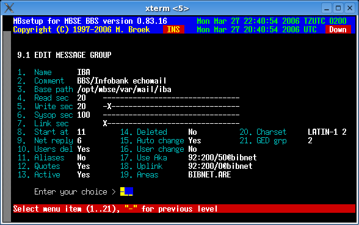

Last update 27-Mar-2006
MBSE BBS Setup - Mail Setup - Message Groups.
Introduction.
Message Groups are to logically divide your echomail areas in groups for different mail networks. It makes sense to select the groups by uplink, and areas file that is available for each network. When you have defined a Areas file and a message is received while you have no area for it, the area will be created with the defaults that are set in the message area group. This will only work if you receive a message from the uplink defined in this group, not from any downlinks. A note about the Start at area you can define, this may be higher then your number of areas currently is. As soon as a area is created in this group the areas database will be expanded so that it fits. Select these values carefully, make sure you have room for all possible areas in that group and skip a number of extra areas for future expansion.
Message Group Setup.
Name The name of the group. Comment The description of the group. Base path The base for the JAM path without the area name. Read sec The read security for bbs users for auto created areas. Write sec The write security for bbs users for auto created areas. Sysop sec The sysop security for bbs users for auto created areas. Link sec The link security to copy to new created areas. Start at Start area number (lowest) to create new areas. Net reply Netmail reply board for auto created areas. Users del User may delete for auto created areas. Aliases Are aliases allowed in auto created areas. Quotes Append a quote when user writes in auto created areas. Active If this group is active. Deleted If this group must be deleted. Auto change Change areas when running mbfido areas. User change Create/delete areas when users connect/disconnect. Use Aka The Fidonet aka to use. Uplink The Fidonet aka of your uplink. Areas Areas file in the path defined in 1.4.6 screen 2. Charset Default character set to use. GoldED grp Groupnumber for GoldED include file.

 Back to Mail Setup
Back to Mail Setup